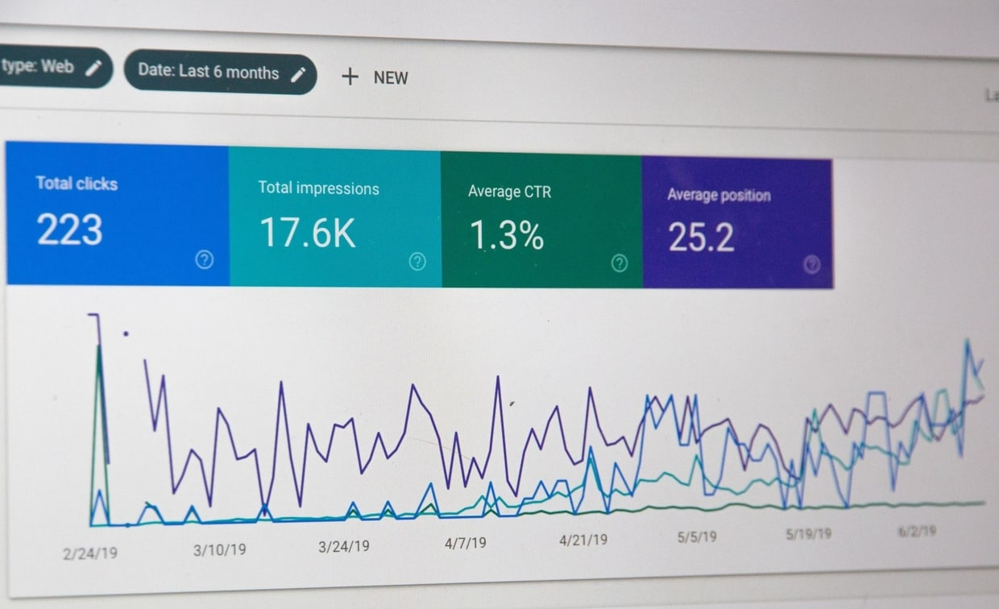
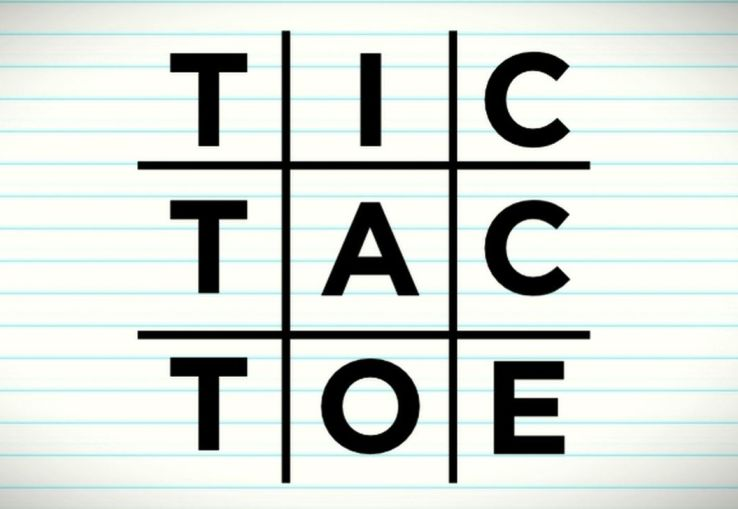

| Python | |
| C | |
| MATLAB | |
| Public Speaking | |
| C++ | |
| HTML5 | |
| Google Analytics | |
| CSS 3 | |
| JavaScript | |
| Video Editing |
"Nothing ever becomes real till it is experienced"
~ John Keats
 During the COVID-19 pandemic that UNESCO recognized the surge of mis-information as a major threat to the people and termed it a "disinfodemic" accompanying the "pandemic".
In the long run, fake information further perpetuates and causes mental strain and anxiety.
This InfoBot provides the user with credible and updated information regarding the number of cases,
recoveries, precautionary measures, and a lot more. The InfoBot receives the user's input via voice commands.
Depending on what the user requires the InfoBot fetches the latest information from the internet via web scrapping
and provides it to the user in the form of audio responses. This also helped me get the "Wolfram Award" at COVID Hack Challenge!
During the COVID-19 pandemic that UNESCO recognized the surge of mis-information as a major threat to the people and termed it a "disinfodemic" accompanying the "pandemic".
In the long run, fake information further perpetuates and causes mental strain and anxiety.
This InfoBot provides the user with credible and updated information regarding the number of cases,
recoveries, precautionary measures, and a lot more. The InfoBot receives the user's input via voice commands.
Depending on what the user requires the InfoBot fetches the latest information from the internet via web scrapping
and provides it to the user in the form of audio responses. This also helped me get the "Wolfram Award" at COVID Hack Challenge!
For tech geeks
This was a project that I and my team made during a bio-engineering competition.
Measuring the size of the wound is currently done manually which is highly inaccurate. As of now, many hospitals manually
measure the size of wound to cut out band-aids that perfectly cover the wound. This makes it difficult, error-prone and
time-consuming to monitor the healing process.
So we developed a program to get the dimensions of a customisable bandage that leads to a quicker and a more efficient healing process by speeding
up the process of measuring the area of the wound, hence preventing any potential infections due to delay.
This project uses OpenCV library in python to detect fresh wounds and provides the dimension of bandages that will perfectly cover the wound.
For tech geeks

Making machine learning models requires a lot of data and finding the dataset that suits our needs takes a huge chunk of our time. But wait a minute why should a ML enthusiast need to waste time downloading images from the web or be stuck because he/she can't find a suitable dataset...
So I created this automated web scrapping bot that takes in the subject of interest say for example cats, dogs, burgers, etc. and goes to the web to collect images related to the same and stores it in a directory of their choice.
You no longer have to search the web to get a suitable dataset to train your model, the bot can make one for you in a few minutes, saving you time which you could devote to improve your model.
For tech geeks

There are two types of people, ones who played TicTacToe and the others who lied that they did'nt. Nonetheless, both of them
hate losing a match of TicTacToe. That's exactly what this project is about - Creating an undefeatable AI, using backtracking
algorithm. You can try playing against it but the best you can achieve is a draw, my AI does not like losing [and I mean it].
For tech geeks
The project is divided into two phases.
The first phase is a game that randomly generates a number from 0 to 5 and express the output in the audio format.
The project helps small children learn counting by visually interacting with the user.
The user is expected to provide the desired answer by pointing the correct number of fingers towards the camera.
If the user provides a number other than the desired number, the software provides instructions to add / subtract the number to reach the desired number.
The phase I won the 2nd best hack award at NSBE Hacks 2020.
The phase II of the project is to focus on converting sign language symbols to other verbal languages using neural nets.
The need for this technology comes from the fact that 70 million people use sign language as a mode of communication.
Unfortunately, very small percentage understand it.
Therefore the design aims to help the people facing verbal challenges to actively communicate with others.
For tech geeks
I'll be frank with you, I wanted to create my own website to make a niche for myself in this online world.
But I did'nt want to use wordpress because that would make me just a random guy in the crowd and back then I did'nt have the money
to hire a web developer. So..., I had to learn it.
I took several online courses and then used the
concepts I learned to create this website. Today, I am glad I chose the tough path as it gave me an in-depth understanding of frontend and
backend of a website and how to work with and maintain databases.
For tech geeks
"If you have an exiting opportunity for me, just wanna say 'Hi' or ask any other questions,
I would love to hear it from you."